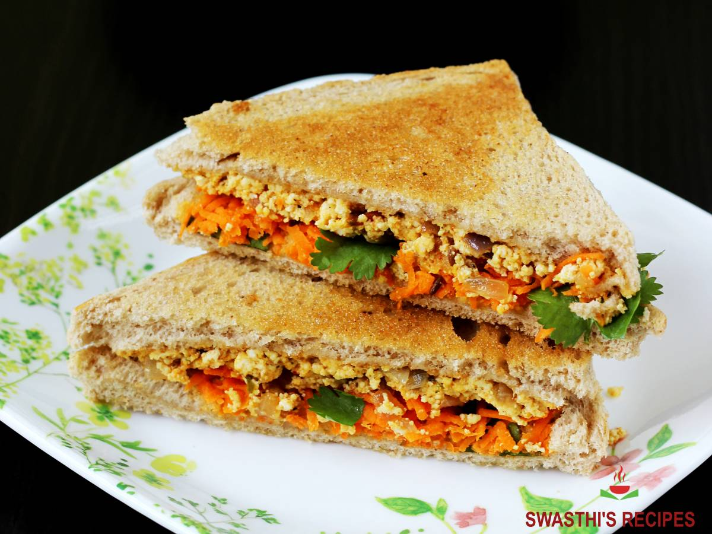

A Paneer Sandwich is exactly as the name states. Paneer which is essentially Indian cheese is layered with tomatoes, onions, cucumbers, butter, chutneys, and chat masala which results in the most delicious sandwich.
Bread paneer rolls are an easy Indian tea time snack with rolled up and toasted bread with a paneer filling. This is one of the most popular recipes on Edible Garden that has been adapted and used as inspiration by many other bloggers.